<a class="skip-link" href="#main-content">Saltar al contenido</a>
<ion-app>
  <ion-split-pane contentId="main-content">
    <ion-menu contentId="main-content" type="overlay" role="navigation" aria-label="Menú principal">
      <ion-content>


        <ion-list id="labels-list" class="ion-content-menu" mode="md" role="list">

          <div class="img-top">
            
           </div>
         <div class="centrado-item">
          <ion-item lines="none" class="item-menu" mode="md" (click)="irWeb()" role="listitem" tabindex="0" (keydown.enter)="irWeb()">
            <ion-label mode="md">Nuestra web</ion-label>
          </ion-item>
          <ion-item lines="none" class="item-menu" mode="md" (click)="irPolitica()" role="listitem" tabindex="0" (keydown.enter)="irPolitica()">
            <ion-label mode="md">Política de privacidad</ion-label>
          </ion-item>
          <ion-item lines="none" class="item-menu" mode="md" (click)="openStore()" role="listitem" tabindex="0" (keydown.enter)="openStore()">
            <ion-label mode="md">Valora nuestra App</ion-label>
          </ion-item>
         </div>
          <div class="img-inf">
            
           </div>
        </ion-list>
      </ion-content>
    </ion-menu>
    <ion-router-outlet id="main-content"></ion-router-outlet>
  </ion-split-pane>
</ion-app>
